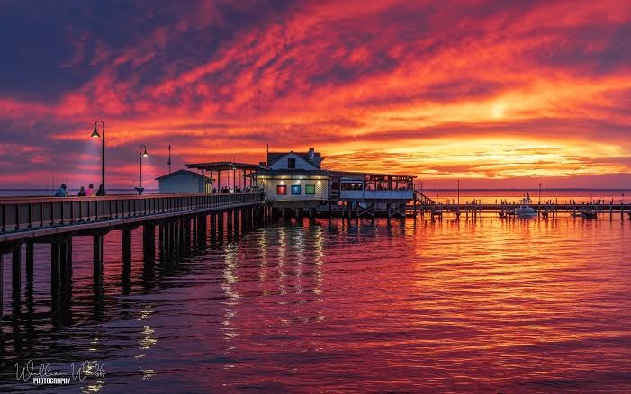
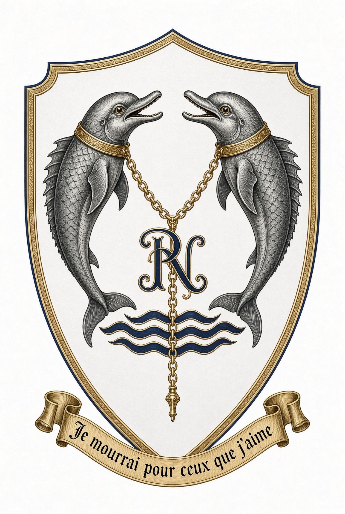
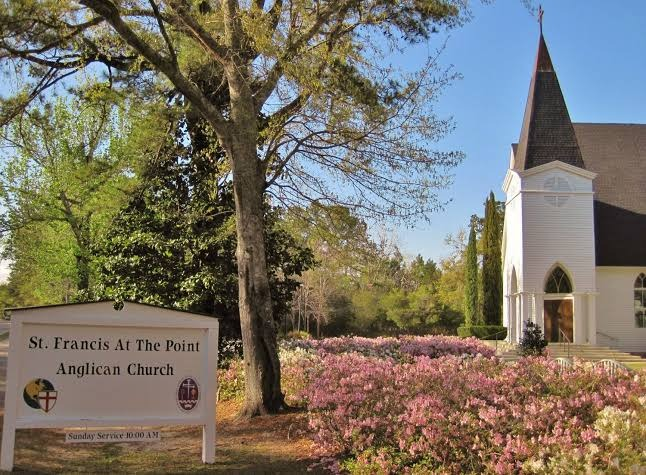
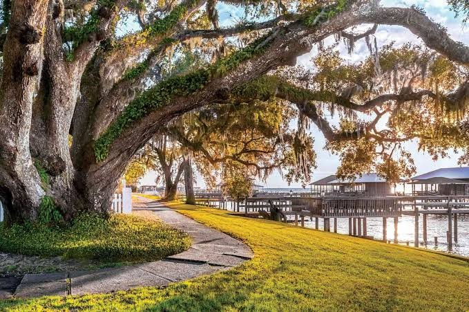
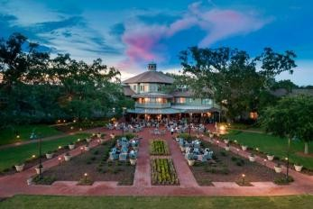
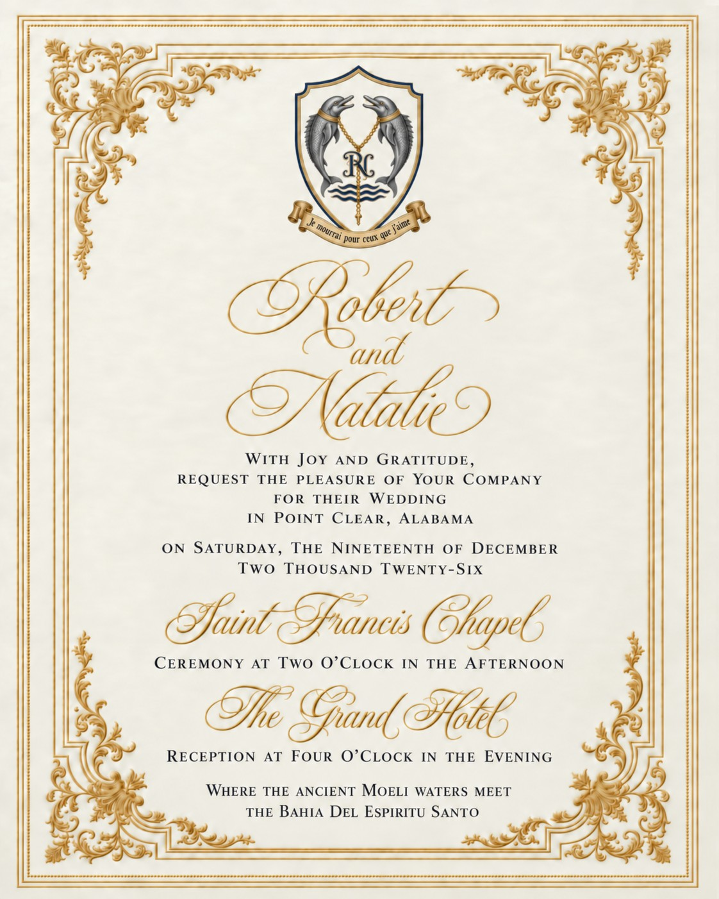

Ceremony
Saint Francis Chapel
Two o'clock in the afternoon
17280 Scenic Highway 98
Fairhope, Alabama 36532
An intimate Anglican chapel on the Point, a short drive from the hotel lawn.


Point Clear, Alabama
Saturday, the Nineteenth of December
Two Thousand Twenty-Six
Where the ancient waters meet
Bahía del Espíritu Santo
Ceremony
Two o'clock in the afternoon
17280 Scenic Highway 98
Fairhope, Alabama 36532
An intimate Anglican chapel on the Point, a short drive from the hotel lawn.
Reception
Four o'clock in the evening
One Grand Boulevard
Point Clear, Alabama 36564
Historic resort on Mobile Bay since 1847. GPS: 17855 Scenic Highway 98.
A gathering of close family. Approximately twenty-five guests.

Ceremony
The chapel stands on Scenic Highway 98 in Point Clear, a carpenter-gothic sanctuary that has served this shoreline community since the late nineteenth century. The larger church beside it was dedicated in 2001; the historic chapel remains the smaller, quieter room.
From the Grand Hotel, follow Scenic Highway 98 north a few minutes. Parking is on the church grounds.
stfrancisatthepoint.org

Reception
A resort has stood on this point since 1847. Live oaks, a brick parterre, and the bay itself hold the evening. Reception begins at four o'clock.
Overnight guests may book directly with the hotel. Mention the Coulson wedding weekend if a room block is later confirmed.
Phone: 251-928-9201
grand1847.com
The Eastern Shore
Take time for the marina, the bayfront, and the old streets beneath the live oaks.
Getting there
Open directions in Google Maps
Mobile Regional Airport is approximately forty minutes away.
Together with their families
19 · 12 · 2026
Click the seal to open

Click to enter